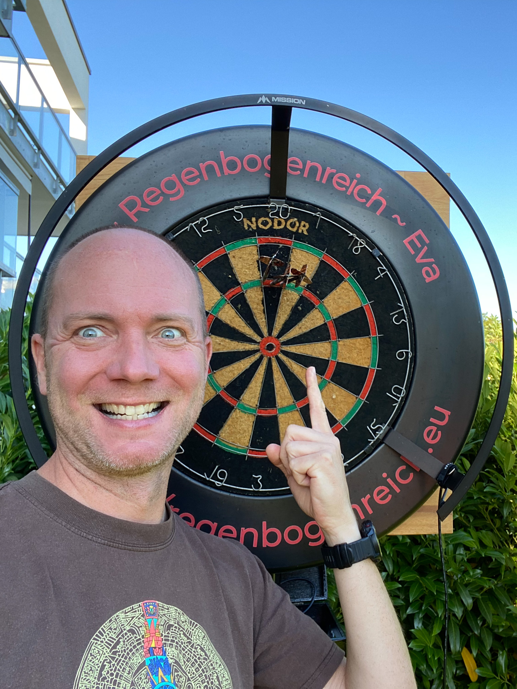

Regenbogenreich
Radio

Das Regenbogenreich Radio erreicht ihr unter folgender Adresse: http://regenbogenreich.eu:8000/stream
(Click mich) Sollte es nicht funktionieren, dann wird derzeit nichts gesendet.
Das Radio wird nicht durchgehend senden, sondern wir werden spezielle Programmzeiten und Programmkanäle anbieten. Die Sendezeiten werden wir
bei Matrix/Element veröffentlichen. Viel Spaß beim Zuhören.
Bisherige Sendungen
- 18.10.2022, 19:30-20:30 Premierensendung. Eine Aufzeichnung findet ihr bei den Podcasts.
- 19.10.2022, 20:45-22:30 Fußball-Liverübertragung direkt aus dem Stadion: DFB Pokal Vfb vs. Arminia (Keine Aufzeichnung vorhanden.)
Redaktion
Eric
 |
Ressorts: Nachrichten, Sport, Musik |
Eva
 |
Ressorts: Nachrichten, Humor, Musik |
Chrischman
|  | Ressorts: Technik, Logistik |
Technik
Das RegenbogenReich Radio nutzt den Icecast2 Streaming Server. Zum Mixen und Senden nutzen wir Mixxx. Das Radio kann alternativ zum Webbrowser auch über eine App empfangen werden.Zu den Webradio-Apps zählen: